Περιεχόμενα:
Κεφάλαιο 1: Εισαγωγή
Από την αρχή του κόσμου, οι άνθρωποι πάντα θαύμαζαν το διάστημα και ήθελαν να
μάθουν περισσότερα για αυτό, να το εξερευνήσουν. Αυτός ο θαυμασμός ήταν παρόν ακόμα
και στα αρχαία χρόνια, με την ανακάλυψη της επιστήμης της Αστρονομίας. Η γοητεία του
ουρανού τραβάει καθημερινά την προσοχή των ανθρώπων, ιδιαίτερα των ρομαντικών και
φιλομαθών. Οι άνθρωποι στρέφουν το βλέμμα τους προς τον ουράνιο θόλο προσπαθώντας
να τον κατανοήσουν. Όταν, λοιπόν, πληροφορηθήκαμε για τον διαγωνισμό αυτό, χωρίς
δεύτερη σκέψη αποφασίσαμε να δηλώσουμε συμμετοχή. Ο συνδυασμός της φυσικής και
του προγραμματισμού ενδιαφέρει κάθε μέλος της ομάδας μας και είμαστε ιδιαιτέρως
ενθουσιασμένοι που μας δόθηκε η ευκαιρία να συμμετάσχουμε στην δεύτερη φάση του
πειράματος.
Μετά από πολλές εποικοδομητικές συναντήσεις, είχαμε αποφασίσει αρχικά να
χρησιμοποιήσουμε το Astro-Pi, προκειμένου να υπολογίσουμε την βαρυτική έλξη που ασκεί
η Γη στον Διεθνή Διαστημικό Σταθμό, παρόλα αυτά, μετά από την χαρμόσυνη είδηση της
πρόκρισης μας, θεωρήσαμε καλύτερο να αλλάξουμε την αρχική μας ιδέα, διατηρώντας όμως
τα θεμέλιά της, και να επικεντρωθούμε στον υπολογισμό του στιγμιαίου ύψους του
σταθμού. Πριν όμως μιλήσουμε περαιτέρω για το πείραμα, θα θέλαμε να αναφερθούμε
συνοπτικά στο σχολείο, στην ομάδα μας καθώς και στις τεχνολογίες που χρησιμοποιήσαμε.
Για καλύτερη αρχειοθέτηση και προώθηση της δουλειάς
μας, σκεφτήκαμε να δημιουργήσουμε μια ιστοσελίδα, στην οποία
θα είναι παρόντα όλα τα στοιχεία για την κατανόηση του
πειράματος, συμπεριλαμβανομένου του κώδικα, των
σχεδιαγραμμάτων και των εγγράφων που δημιουργήσαμε.
Κεφάλαιο 2: Το σχολείο και η ομάδα μας
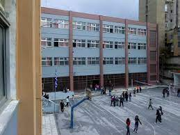
Το μέρος που ξεκίνησαν όλα, ήταν το σχολείο στο οποίο φοιτούμε (που εμφανίζεται στην δεξιά εικόνα), το 23ο γενικό λύκειο Θεσσαλονίκης “Ιωάννης Χατζούδης”, που βρίσκεται στην Κασσάνδρου 17-19, Άνω πόλη και ιδρύθηκε το 1987. Στον σχολικό μας χώρο συστεγάζονται 2 ακόμα σχολεία, το 26ο και 32ο Γυμνάσιο Θεσσαλονίκης. Η διπλανή εικόνα είναι από το προαύλιο χώρο του σχολείου.
Αν θέλαμε να χαρακτηρίσουμε το σχολείο μας με μία λέξη, θα το χαρακτηρίζαμε ως πολυπολιτισμικό. Αρκετοί μαθητές του, είναι παιδιά οικονομικών μεταναστών με καταγωγή από διάφορες χώρες του κόσμου, όπως την Ρωσία, την Αλβανία, το Πακιστάν, την Νιγηρία, την Τουρκία, την Γεωργία και την Ουκρανία. Το σχολείο μας διαθέτει ένα εξελιγμένο εργαστήριο θετικών επιστημών καθώς και ένα καλά εξοπλισμένο εργαστήριο πληροφορικής, με πολλούς και σύγχρονους υπολογιστές.
Όσον αφορά την ομάδα μας, αποτελείται από τέσσερα άτομα, όλοι δεκαέξι χρονών, που μοιράζονται την ίδια αγάπη για τις θετικές επιστήμες. Το πρώτο μέλος, ο Αλέξανδρος, συνεισέφερε σημαντικά στην σύνταξη των κειμένων, και ήταν ο επικεφαλής του επιστημονικού τομέα. Σκέφτεται να σπουδάσει αστροφυσική, παρόλα που τον ενδιαφέρουν τόσο οι θετικές, όσο και οι ανθρωπιστικές σπουδές, Το δεύτερο μέλος, ο Στέλιος, είναι ο συντονιστής του πειράματος, αρχισυντάκτης, των κειμένων, και βοήθησε με τον σχολιασμό του κώδικα. Στον ελεύθερο του χρόνο, ασχολείται με την μουσική και θέλει να σπουδάσει ηλεκτρολόγος μηχανικός, μαζί με το επόμενο μέλος.
Ο Παναγιώτης Σ. είναι υπεύθυνος της γραφής του κώδικα καθώς και της σύνταξης της ιστοσελίδας. Βοήθησε και με τον σχολιασμό του κώδικα. Είναι λάτρης του προγραμματισμού, και στο μέλλον, μαζί με τον Στέλιο, σκέφτεται να ασχοληθεί με τον σχεδιασμό και την ανάπτυξη βιντεοπαιχνιδιών. Το τελευταίο μέλος, ο Παναγιώτης Κ. ορίστηκε υπεύθυνος του σχολιασμού του κώδικα και βοήθησε αξιοσημείωτα και στους δύο τομείς, ιδιαίτερα στον σχεδιασμό της σελίδας. Και οι δύο Παναγιώτηδες θα ήθελαν στο μέλλον να σπουδάσουν την επιστήμη των υπολογιστών.
Κεφάλαιο 3: Οργάνωση
Η συνεργασία και η οργάνωση, αποτελούν βασική προϋπόθεση για την επιτυχία του πειράματος. Το κάθε μέλος της ομάδας μας έχει διαφορετικές ικανότητες, οι οποίες αντιστοιχούν σε συγκεκριμένες αρμοδιότητες. Αποφασίσαμε λοιπόν να ξεκαθαρίσουμε τους ρόλους το καθενός, ορίζοντας κάποια άτομα ως υπεύθυνους για τον επιστημονικό και προγραμματιστικό τομέα.
Παρόλο που το κάθε μέλος μπορεί να εκφράσει τις ιδέες του ελεύθερα, θεωρήσαμε καλύτερο να ορίσουμε και έναν συντονιστή, για περισσότερη αποτελεσματικότητα και ταχύτητα, σε θέματα οργάνωσης. Κατά την διάρκεια του διαγωνισμού, βασικός στόχος όλων μας είναι η επιτυχία του πειράματος, καθώς και η απόκτηση γνώσεων, από όλους τους τομείς που περιλαμβάνονται.
Παρά τις διάφορες χρονοβόρες εξωσχολικές και προσωπικές ασχολίες του καθενός, επιλέξαμε να ορίσουμε τις Παρασκευές και τις Κυριακές ως μέρες συγκέντρωσης και ενασχόλησης, σχετικά με το πείραμα. Θέσαμε τον Δεκέμβριο και τις αρχές του Ιανουαρίου, ως περίοδο σχεδιασμού και ανάπτυξης της ιδέας μας ενώ τον υπόλοιπο Ιανουάριο καθώς και τον Φεβρουάριο, ως περίοδο δοκιμής του προγράμματός μας και συγγραφής της επιστημονικής έρευνας. Βέβαια, καθώς δεν ήταν πάντα εύκολο το να συναντηθούμε από κοντά, αρκετές φορές συναντιόμασταν και διαδικτυακά, ώστε να μην σπαταλήσουμε πολύτιμο χρόνο.
Κεφάλαιο 4: Οι τεχνολογίες
Το δικό μας kit που μας στάλθηκε περιείγχε ένα Raspberry Pi, ένα Sense Hat, το τροφοδοτικό, την κάμερα και τους φακούς της, ένα καλώδιο mini-HDMI σε HDMI και μια 16GB Micro SD. Παρόλο που το πείραμά μας δεν απαιτεί την χρήση της κάμερας, εμείς αποφασίσαμε να την συνδέσουμε ούτως ή άλλως, για πειραματισμό. Στην συνέχεια, συνδέσουμε το Sense Hat με το Raspberry Pi, μέσω της κεφαλής GPIO και στην συνέχεια να το βιδώσουμε. Μετά την συναρμολόγηση, συνδέσαμε ένα USB πληκτρολόγιο και ποντίκι και τέλος, αφού ο υπολογιστής πραγματοποίησε την πρώτη του εκκίνηση, δημιουργήσαμε ένα λογαριασμό για την ομάδα μας και εισήλθαμε στην επιφάνεια εργασίας.
Το Raspberry Pi είναι ένας μικρο-υπολογιστής, που χωράει στην παλάμη ενός χεριού, και απευθύνεται σε ένα ευρύ κοινό, καθώς έχει ποικίλες χρήσεις. Μπορεί να χρησιμοποιηθεί τόσο και στο σπίτι, για απλή προσωπική χρήση, όπως εξερεύνηση του διαδικτύου ή γράψιμο εργασιών, όσο και σε εργαστήρια για πολύπλοκα πειράματα φυσικής ή προγραμματισμού, ή και σε εταιρείες ως ένας server. Κατασκευάζεται από την Raspberry Foundation, με έδρα την Μεγάλη Βρετανία.
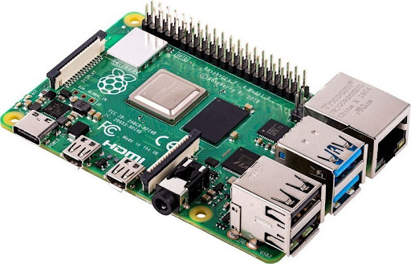
Παρά το μικρό του μέγεθος, δεν υστερεί αρκετά στις τεχνικές του προδιαγραφές, σε σχέση με άλλους υπολογιστές. Είναι διαθέσιμο με 1 GB, 2 GB, 4 GB και 8 GB LPDDR4 RAM. Το μοντέλο που χρησιμοποιήσαμε έχει 4 GB RAM. Ο επεξεργαστής του είναι ένας 64 bit τετραπύρηνος, Cortex Α72. Ο υπολογιστής διαθέτει και ένα ενσωματωμένο ασύρματο τσιπ, τεχνολογίας 802.11b/g/n/ac με Bluetooth και WiFi. Για έξοδο εικόνας, έχει 2 Micro HDMI θύρες που υποστηρίζουν 4Κ ανάλυση σε 60 Hz. Τέλος περιλαμβάνει 4 θύρες USB, εκ των οποίων 2 είναι USB 3.0 και οι άλλες δύο USB 2.0 και μία θύρα Gigabit Ethernet.
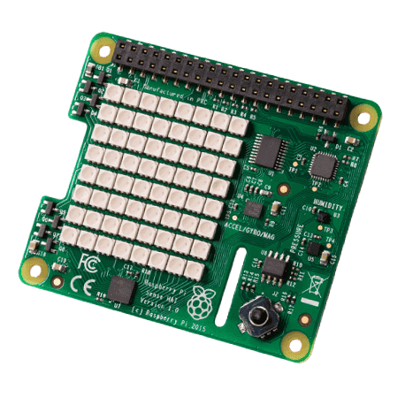
Σε συνδυασμό με το Raspberry Pi για το πείραμά μας χρησιμοποιήσαμε και το sense hat (που απεικονίζεται παρακάτω), επίσης κατασκευασμένο από την Raspberry foundation σε συνεργασία με την Ευρωπαϊκή Διαστημική Εταιρεία. Το Sense Hat δημιουργήθηκε αρχικά αποκλειστικά για τα Astro Pis, ενώ πλέον είναι διαθέσιμα στο διεθνές κοινό. Έχει ενσωματωμένη μία 8Χ8 LED οθόνη, ένα χειριστήριο (joystick), καθώς και τους παρακάτω ανιχνευτές (sensors):
Αναλυτικότερα, χρησιμοποιήσαμε την Αδρανειακή Μονάδα Μέτρησης του Sense Hat, έτσι ώστε να υπολογίσουμε την επιτάχυνσή του στους 3 άξονες (x,y,z), η οποία περιέχει ένα:
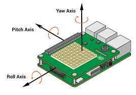
Ο κώδικας γράφτηκε στην γλώσσα προγραμματισμού Python. Προκειμένου το πρόγραμμά μας να δουλέψει, χρειάστηκε να εισαγάγουμε τις παρακάτω βιβλιοθήκες:
Κεφάλαιο 5: Το πείραμά μας
Στην προσπάθειά μας θελήσαμε να ακολουθήσουμε την επιστημονική μέθοδο που
μας υπέδειξαν οι καθηγητές Φυσικών Επιστημών του σχολείου μας. Δηλαδή ξεκινήσαμε
παρατηρώντας την κίνηση του ISS, χρησιμοποιώντας όποιο πρόσφορο μέσο είχαμε στη
διάθεσή μας. ISS Detector, διαδίκτυο, και μετά από αρκετές αναζητήσεις, σχηματίσαμε μια
γενική υπόθεση, κάτι σαν μοντέλο, η οποία μπορούσε να εξηγήσει τις προηγούμενες
παρατηρήσεις μας. Η επιστημονική μας υπόθεση ήταν ότι ο διεθνής διαστημικός σταθμός
δέχεται μια δύναμη από τον πλανήτη Γη, την βαρυτική έλξη, και καμία άλλη δύναμη από τα
υπόλοιπα διαστημικά σώματα (υπόλοιποι πλανήτες, δορυφόροι, ήλιος). Χρησιμοποιήσαμε
την επιστημονική μας υπόθεση για να κάνουμε προβλέψεις που αφορούσαν την κίνηση του
διαστημικού σταθμού. Έτσι η υπόθεσή μας απαιτούσε συγκεκριμένα ποσοτικά
αποτελέσματα, οπότε στραφήκαμε προς τη μέτρηση του ύψους του διαστημικού σταθμού
από την επιφάνεια της γης. Η διεξαγωγή του πειράματος απαιτεί επιπρόσθετες
παρατηρήσεις, και ίσως μας οδηγήσει σε αναθεώρηση της αρχικής μας υπόθεσης.
Το πείραμα μας αποσκοπεί στον υπολογισμό του στιγμιαίου ύψους του διεθνούς
διαστημικού σταθμού από την επιφάνεια της Γης. Καθώς η κίνηση που εκτελεί ο σταθμός
είναι αρκετά περίπλοκη, αφού το ύψος συνεχώς μεταβάλλεται και σε συγκεκριμένα χρονικά
διαστήματα, ενεργοποιούνται οι μηχανές του, ώστε να μπορεί να κινηθεί σε ένα μεγαλύτερο
υψόμετρο, και αφού η Γη δεν είναι σφαιρική, αλλά ελλειπτική, σε όλη τη διάρκεια του
πειράματος θα υποθέσουμε ότι η Γη είναι σφαιρική, με ακτίνα RΓ και ότι ο ISS διαγράφει
μια κυκλική τροχιά. Για να πραγματοποιήσουμε τον στόχο μας θα χρειαστεί αρχικά να
υπολογίσουμε την ένταση του βαρυτικού πεδίου της Γης στο ύψος που βρίσκεται ο διεθνής
διαστημικός σταθμός. Στην συνέχεια θα χρησιμοποιήσουμε τον τύπο της έντασης του
βαρυτικού πεδίου, λαμβάνοντας ως δεδομένα τη μάζα της Γης (MΓης = 5.9722 * 1024 Kg), την ακτίνα της Γης (RΓης = 6378.1 Km), καθώς και την σταθερά της παγκόσμιας έλξης (G = 6.67 * 10-11).
Στο τέλος του πειράματος, θα επαληθεύσουμε τα δεδομένα μας, εισάγοντας την βιβλιοθήκη orbit στον κώδικά μας.
Αρχικά, θεωρώντας αμελητέα την έλξη του Σταθμού από άλλους πλανήτες και από τον ήλιο, προκύπτει ότι η μόνη δύναμη που ασκείται στον ISS είναι η βαρυτική έλξη της Γης, η οποία έχει κατεύθυνση προς το κέντρο της Γης, μέσω του τύπου της Κεντρομόλου δύναμης αποδεικνύεται ότι η βαρυτική επιτάχυνση του διεθνούς διαστημικού σταθμού ισούται με την Κεντρομόλο επιτάχυνση του.
Υπολογίζοντας την επιτάχυνση:
Επειδή ο σταθμός κινείται και στους τρεις άξονες (x,y,z) προκειμένου να βρούμε την βαρυτική του επιτάχυνση, θα χρειαστεί να προσθέσουμε διανυσματικά χρησιμοποιώντας τον κανόνα του παραλληλογράμμου, δηλαδή τον νόμο των συνημιτόνων, την συνιστώσα του κάθε άξονα, την οποία θα λάβουμε μέσω της Αδρανειακής Μονάδας Μέτρησης του Sense Hat (όπως αναλύσαμε και παραπάνω). Από την στιγμή όμως όπου όλοι οι άξονες είναι κάθετοι μεταξύ τους, συμπεραίνουμε ότι το μέτρο του διανυσματικού τους αθροίσματος ισούται με την ρίζα, του αθροίσματος της συνιστώσας του κάθε άξονα στο τετράγωνο.
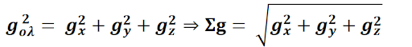
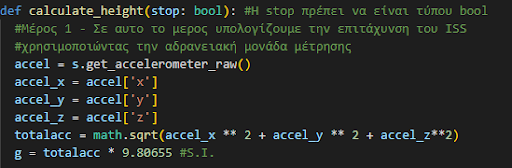
Υπολογίζοντας το ύψος:
Γνωρίζοντας πια την βαρυτική επιτάχυνση και έχοντας λάβει ως δεδομένα την μάζα της Γης, την ακτίνα της και την σταθερά της παγκόσμιας έλξης, θα εφαρμόσουμε τον τύπο της βαρυτικής επιτάχυνσης και θα λύσουμε ως προς απόσταση, η οποία είναι το άθροισμα της ακτίνας της Γης και του ύψους του διεθνούς διαστημικού σταθμού από την επιφάνεια της Γης. Στο τέλος, θα προκύψει ότι το ύψος του ISS, είναι ίσο με την ρίζα, του πηλίκου του γινομένου της μάζας της Γης επί την σταθερά της παγκόσμιας έλξης, προς την ένταση του βαρυτικού πεδίου, ελαττωμένο κατά την ακτίνα της Γης.
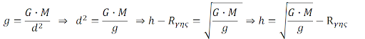
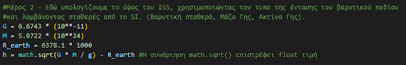
Επαλήθευση των μετρήσων μας:
Στο παρακάτω μέρος του κώδικα, επαληθεύουμε τους υπολογισμούς του Astro-Pi, σε σχέση με τα πραγματικά δεδομένα που θα έχουμε λάβει από την orbit βιβλιοθήκη, και αν το ύψος που βρήκαμε απέχει λιγότερο 20km από το πραγματικό ύψος του ISS, θα επισυνάψουμε Αληθές στο ourrseults.csv, το αρχείο στο οποίο αποθηκεύονται οι μετρήσεις μας, ενώ αν αποκλίνουν περισσότερο από 20 km, θα επισυνάψουμε Ψευδές.
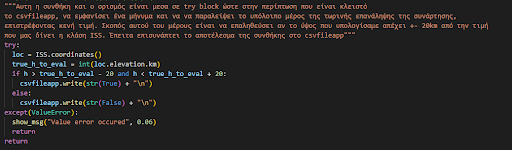
Επίλογος
Αν ο κώδικας που έγραψε η ομάδα μας λειτουργήσει σωστά και όπως αναμένεται,
στο τέλος του πειράματος θα έχουμε καταφέρει να υπολογίσουμε την βαρυτική
επιτάχυνση του Διεθνούς Διαστημικού Σταθμού, και με την βοήθειά της, το ύψος του από
την επιφάνεια της Γης. Τέλος, θα έχουμε μετρήσει και το μέσο του ύψος, βρίσκοντας τον
μέσο όρο τον στιγμιαίων τιμών.
Θα θέλαμε να ευχαριστήσουμε την E.S.A. διότι μας έδωσε την ευκαιρία να
δουλέψουμε σε ένα πραγματικό project. Καταλάβαμε ότι μπορούμε να κάνουμε πράγματα
με τη συνεργασία, συναρμολογήσαμε με τα χέρια μας το Astro Pi, αποκτήσαμε γνώσεις στη
Φυσική στην Αστρονομία και στον Προγραμματισμό. Πιστεύουμε πλέον στον εαυτό μας και
συνειδητοποιήσαμε ότι έχουμε να κερδίσουμε από το σχολείο, τόσο γνώσεις όσο και
δεξιότητες χρήσιμες για την επαγγελματική μας καριέρα.
Πηγές/Βιβλιογραφία:
Δισδιάστατη απεικόνηση του πειράματος:
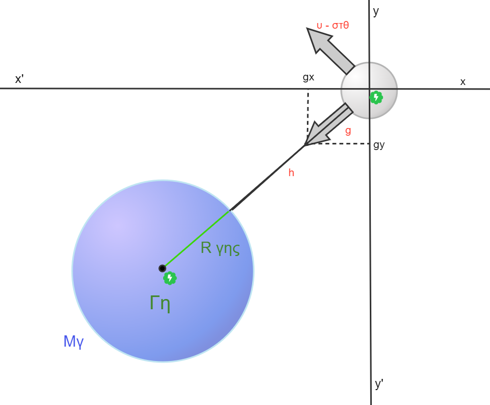
Το πρόγραμμα:
Ο κώδικας:
Αυτές είναι εικόνες του κώδικα μας, με syntax highlighting από το Visual Studio Code της Microsoft.
Για να δείτε τα σχόλια του κώδικα, μπορείτε να κατεβάστε το Astro_pi_code_sample.txt.
Θα δωθούν επιπλέον μερικές επιπρόσθετες επεξηγήσεις δίπλα στις εικόνες, σε όποια μέρη του κώδικα τις χρειάζονται.
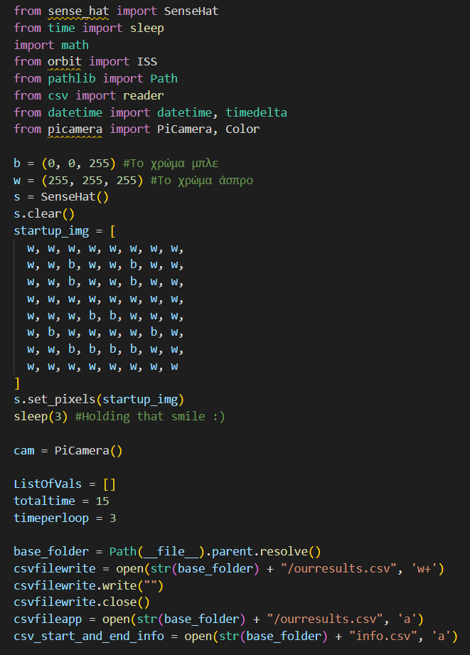
Για να δείτε γιατί εισάγουμε αυτές τις βιβλιοθήκες, μπορείτε να δείτε το Necessary libs.docx
ή να κάνετε αναφορά στο Κεφάλαιο 4.
Ορίζοντας μεταβλητές εκτός συναρτήσεων τους δίνουν 'παγκόσμια ορατότητα', συνεπώς, μπορούμε να τις χρησιμοποιήσουμε και εντός και εκτός συναρτήσεων.
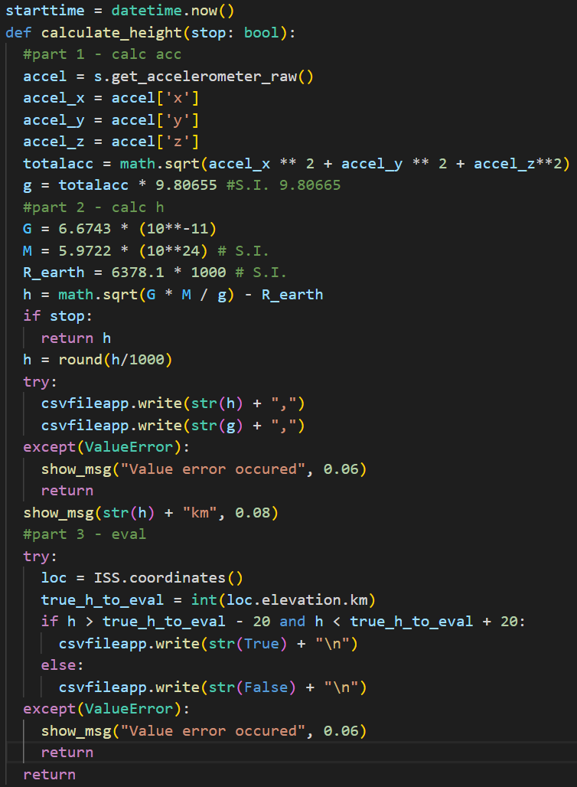
Βγάζουμε την συνισταμένη βαρυτική ένταση (σε g), με διανυσματική πρόσθεση. Πολλαπλασιάζοντας το αποτέλεσμα επί 9.80655, το μετατρέπουμε σε m/s^2
Αν προσπαθήσουμε να χρησιμοποιήσουμε την csvfileapp αφού την έχουμε κλείσει, θα 'πετάξει' ValueError

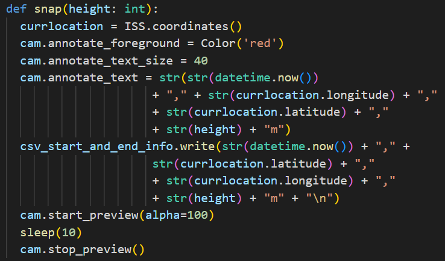
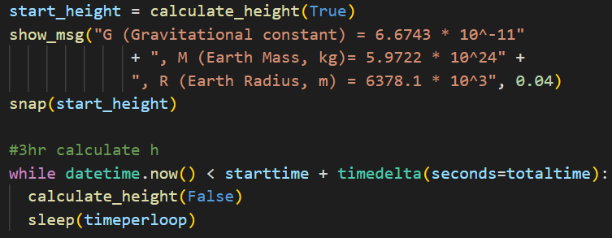
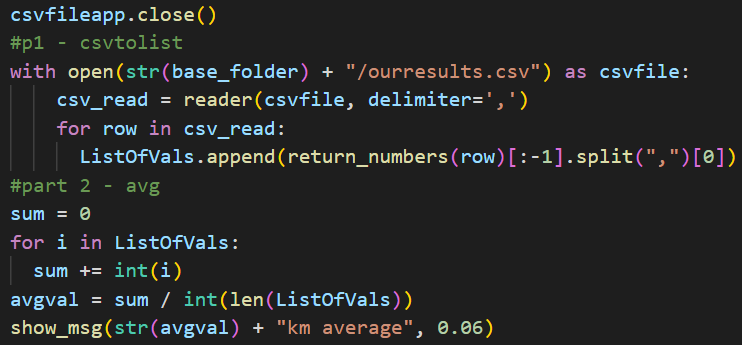
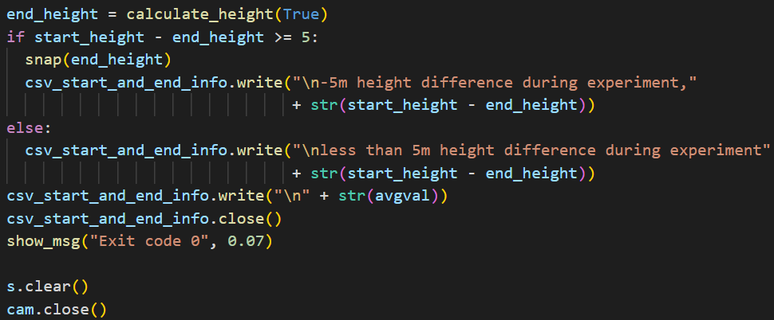
Τα διαγράμματα ροής:
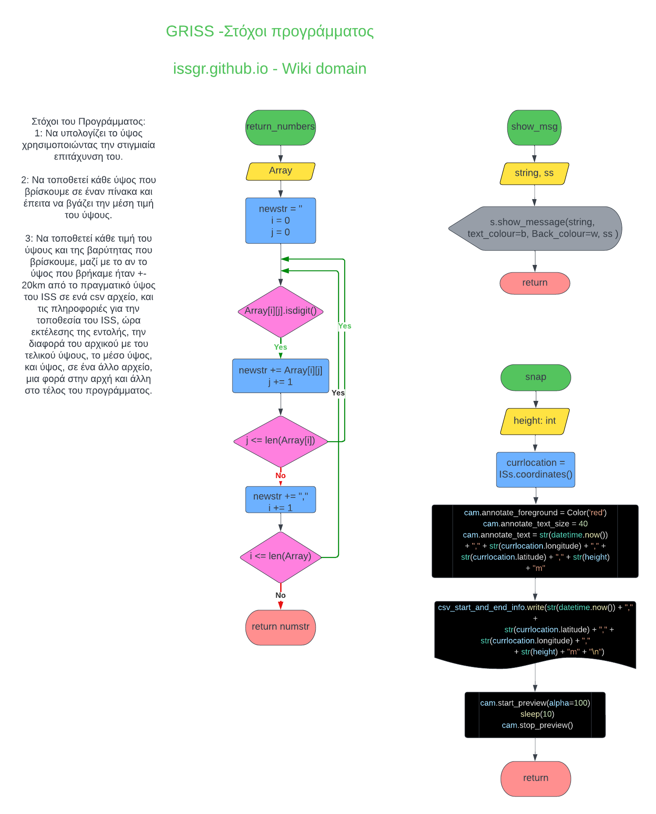
 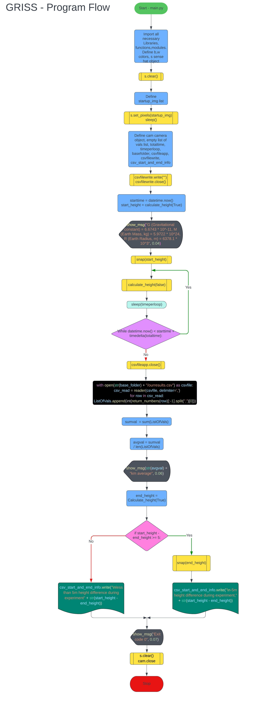
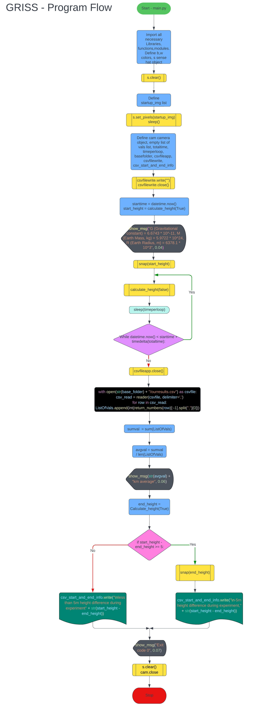
Προγράμματα που χρησιμοποιήθηκαν
Visual Studio Code:

LucidChart:

Chemix:

HTML5 & CSS3

Οι φωτογραφίες μας


Θα θέλαμε να ευχαριστήσουμε την ESA και την Raspberry Pi Foundation για την υπέροχη αυτή ευκαιρία που μας δώθηκε για το Astro-pi Project


Η ομάδα GRISS αποτελείται από τον Αλέξανδρο Καραδίμογλου, Παναγιώτη Σκούλη,
Παναγιώτη Καλαμακίδη, Στέλιο Στεφανή. Η εργασία πραγματοποιήθηκε υπό την επίβλεψη
του φυσικού μας Παναγιώτη Πετρίδη και την φιλολογική επιμέλεια των φιλολόγων μας
Χρυσόστομου Σαμαρά και Κατερίνας Γυφτοπούλου.
23ο ΓΕΛ Θεσσαλονίκης, Φεβρουάριος 2023